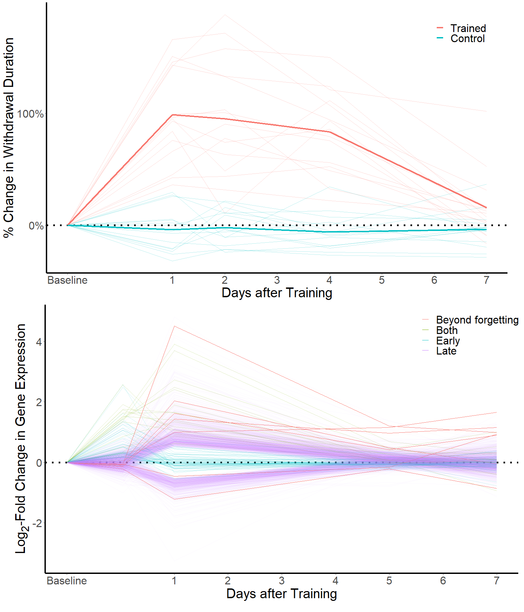

4 Encoding: What are the transcriptional changes induced by long-term sensitization training?
Successful long-term sensitization training protocols activate CREB1 and C/EBP while de-activating CREB2, triggering a transcriptional response that produces the cellular and synaptic changes required to encode a long-term sensitization memory. What, exactly, is this transcriptional response and how is it organized?
A framework for answering this question was developed from tracking not transcription but translation. Specifically, measurement of the rate of protein production in Aplysia nociceptors showed that serotonin produces two waves of increased translation: a small early wave evident within 1 hour that rapidly fades, and a larger late wave that arises more than 3 hours after the end of induction (Barzilai et al. 1989). The early wave is part of the immediate-early response, as it persists through treatments that block transcription. Subsequent studies have found that transcriptional changes are also organized into early and late waves, identifying transcripts that show rapid but transient changes in expression (Zwartjes et al. 1998), transcripts that show delayed changes in expression (Kuhl et al. 1992), and some that bridge these phases of regulation (Hart et al. 2011; R.-Y. Liu et al. 2011).
The early and late waves have been further characterized via microarray studies conducted at different time points after long-term sensitization training (Figure 6). These studies estimate that the early wave is focused, involving only about 50 transcripts (Herdegen, Holmes, et al. 2014), that the late wave is complex, involving over 1,000 transcripts, and that very few (about 25) transcripts participate in both waves (Conte et al. 2017). As sensitization memory is forgotten, the late wave also decays, but a handful of transcripts have been identified that remain regulated even beyond forgetting (Perez et al. 2018).

This section summarizes what is known about the transcriptional changes forming the early and late waves of regulation after the induction of long-term sensitization and its in vitro analogs. Special focus is given to two interesting classes of transcriptional change: those that participate in both early and late waves of regulation, and those that persist even after sensitization is forgotten.
4.1 The early wave of transcriptional change includes up-regulation of transcription factors, effector genes, and specific isoforms of CAM
Long-term sensitization training produces an immediate-early response that includes up-regulation of c/EBP. Successful training stabilizes and extends this rapid phase of transcriptional change, but it remains transient, with c/EBP mRNA levels returning to baseline within 5 hours of induction. The early wave of transcription and translation detected after sensitization training consists of this immediate-early response and its subsequent stabilization and elaboration.
In addition to c/EBP, several specific transcripts in the early wave have been identified. Some are transcription factors, with sensitization training producing rapid increases in the expression of transcripts that encode CREB1 (Bartsch et al. 1998) and a putative Aplysia homolog of C/EBPγ [aka Ig/EBP; Herdegen, Conte, et al. (2014)]. In addition, several effector genes are regulated in the early wave of transcription. This includes transcripts encoding Aplysia homologs of ubiquitin hydrolase [uch; Chain et al. (1999); Hegde et al. (1997)], calmodulin (Zwartjes et al. 1998), the peptide neurotransmitter sensorin (Sun, Wu, and Schacher 2001), and an Aplysia Tolloid/BMP-1-like protein (Q. R. Liu et al. 1997).
There are probably additional transcriptional changes in the early wave, with a microarray analysis identifying over 50 additional transcripts showing rapid but transient regulation after sensitization training (Herdegen, Holmes, et al. 2014). Most of these additional transcripts have not yet been mapped to well-annotated gene models. In addition, a microarray analysis conducted immediately after in vivo serotonin exposure in Aplysia kurodai identified regulation of 4 novel transcripts that were validated via qPCR: up-regulation of transcripts predicted to encode homologs of matrilin, antistasin, and eukaryotic translation initiation factor 3 (EIF3) and down-regulation of a BAT1 (Lee et al. 2008). Time-courses were not evaluated, but EIF3 is likely one of the rare transcripts regulated both rapidly and persistently; it is discussed in (encoding_both_waves?).
One intriguing aspect of the early wave of transcription is that it can also produce changes in the expression of specific isoforms of the same gene. Specifically, work in cell culture shows that serotonin treatment shifts the expression of different isoforms of mRNA for an Aplysia homolog of NCAM immunoglobulin-related cell adhesion molecule (ApCAM), changing the balance of isoform expression in Aplysia nociceptors and motor neurons without changing overall mRNA levels across all ApCAM isoforms (Schacher et al., 2000). These changes in isoform expression require trans-synaptic interactions, as they only occur when sensory and motor neurons are co-cultured together. Changes in both overall and synaptic ApCAM expression play critical roles in producing in vitro long-term sensitization, contributing to both transcription factor activation (Lee et al., 2007) and synapse formation (Zhu et al., 1995). The changes in ApCAM isoform expression produced by serotonin suggests that the trans-isoform measurement of gene expression that has so far been common in Aplysia research may miss important forms of transcriptional regulation, pointing to an important priority for future research.
4.2 The early wave of transcriptional response produces feedback loops that help stabilize and extend induction mechanisms
The immediate-early transcriptional response is initially fragile; it is extended and stabilized by complex interactions triggered by long-term training protocols. This can be observed in the dynamics of the key immediate-early expression of c/EBP. Even a short-term protocol (a single shock) is sufficient to produce a rapid increase in c/EBP transcription, but this fades in less than 1 hour, producing no lasting effects (Kopec et al., 2015). With repeated shock, c/EBP becomes upregulated for several hours (Yamamoto et al., 1999). Treatments that prevent the stabilization of c/EBP expression impair the induction of long-term plasticity (Lee et al., 2012; Mirisis et al., 2021; Yim et al., 2006); treatments that extend its activation enable short-term protocols to produce lasting effects (Kim et al., 2006; Lee et al., 2001).
Stabilization of the immediate-early response occurs, at least in part, through regulation of c/EBP activity and stability by MAPK isoforms. First, c/EBP is phosphorylated by ERK, and this enables the binding of C/EBP to ERE motifs in its target genes (Yamamoto et al., 1999). In addition, the p38 isoform of MAPK phosphorylates an Aplysia homolog of the RNA-binding protein embryonic lethal visual system (ELAV), protecting c/EBP mRNA from rapid degradation (Mirisis et al., 2021; Yim et al., 2006) that would otherwise occur from ARE/poly(U)-binding/degradation factor (AUF1; Lee et al., 2012). These interactions integrate the extracellular signaling pathways contributing to ERK activation into the regulation of c/EBP: TrkB-receptor-activation is required for the initial increase in c/EBP transcription and NGF-B activation of P38 is required for the stabilization and extension of c/EBP transcription with long-term protocols (Kopec et al., 2015; Mirisis et al., 2021).
Stabilization of the early wave of transcription is also mediated by feedback between expressed genes and induction mechanisms. For example, the rapid increase in the expression of uch degrades the regulatory subunit of PKA, extending the time during which the catalytic domain is active (Hegde et al., 1997). In addition, CREB1’s promotion of its own expression extends CREB1 activity (Mohamed et al., 2005); calmodulin mediates serotonergic activation of adenylyl cyclase (Lin et al., 2010); sensorin secretion activates autoreceptors that help activate ERK (Hu et al., 2004), and tolloid regulates TGF-β signaling that is also important for ERK activation (Chin et al., 1999). Functional studies have confirmed that importance of these feedback loops, showing that the long-term persistence of serotonin-induced plasticity depends on upregulation of CREB1 (Liu et al., 2011) and uch (Hegde et al., 1997) as well as signaling from TGF-β, which is activated by tolloid (Chin et al., 1999; Zhang et al., 1997). For sensorin, serotonin produces not only a rapid but transient increase in its mRNA expression, but also export of sensorin mRNA to the neurites of nociceptors co-cultured with motor neurons, producing in increase in sensorin secretion that is essential for strengthening ERK activation and enabling serotonin to produce long-lasting plasticity (Hu et al., 2006). Some negative-feedback may also possible, as C/EBPγ lacks a transcriptional activation domain and in other animals has been shown to act as a negative inhibitor C/EBP function (Cooper et al., 1995); functional studies have not yet investigated this possibility.
4.4 A small and diverse set of transcripts participate in both the early and late waves of transcription
Although long-term sensitization produces distinct early and late waves of transcription, some transcripts participate in both phases of regulation, showing changes in expression that begin rapidly but also persist for at least 1 day after training. This is likely to be a rare form of regulation, with microarray analysis after sensitization training identifying only 25 potential “early-but-persistent” transcripts (Conte et al., 2017). Those that are well characterized are diverse, including transcription factors (CREB1 and Egr), synaptic proteins (synapsin), regulators of gene expression (eIF3 and TOB1), and modulatory peptide transmitters (FMRFa).
The early-but-persistent transcripts are of special interest, as their continued regulation suggests they may play some essential role in long-term sensitization. In particular, transcriptional changes involved in maintaining sensitization memory would be expected to show this type of stable regulation. Functional analysis of several “early-but-persistent” bears out this interest, demonstrating essential roles in in vitro analogs of sensitization.
One of the first “early-but-persistent” transcripts to be identified was synapsin (Hart et al., 2011), a protein that regulates synaptic vesicles. In culture, repeated pulses of serotonin produce an immediate increase in synapsin mRNA that decays to a moderate down-regulation at 12 hours and then rises back to strong up-regulation within 1 day, indicating that synapsin is part of both the early and late waves of transcription. These changes are likely mediated by activation of CREB1, as serotonin promotes binding of CREB1 to a CRE-like site in the synapsin promoter. Transcriptional changes in synapsin are accompanied by a rapid rise in synapsin protein that within 24 hours is targeted specifically to synaptic varicosities in Aplysia nociceptors. Synapsin likely plays a critical role in long-term sensitization, as RNA interference timed to prevent changes in synapsin expression prevent serotonin from producing lasting synaptic facilitation.
eIF3 also shows early-but-persistent transcriptional activation. It was initially identified for showing a rapid increase in expression following in vivo serotonin exposure in intact animals (Lee et al., 2008a), and subsequent study showed it is also persistently up-regulated after long-term sensitization training (Conte et al., 2017). Consistent with the importance of this class of transcripts, work in culture shows that knockdown of eIF3 expression via RNA interference prevents the long-term synaptic effects of serotonin, while over-expression enables short-term protocols to produce lasting effects (Lee et al., 2008a).
A third well-characterized early-but-persistent transcript is an Aplysia homolog of early-growth response protein (Egr; Cyriac et al., 2013), a transcription factor that plays a key in long-term plasticity and memory in mammals (Poirier et al., 2008). Egr mRNA is constitutively expressed throughout the nervous system and is bi-directionally regulated by changes in neural activity. Long-term sensitization produces a rapid and sustained increase in Egr mRNA in Aplysia nociceptors (Herdegen et al., 2014a). Although the function of Egr regulation has not yet been explored, the degree of up-regulation 1 day after training is correlated with the strength of memory expression at that time point (Cyriac et al., 2013).
Although already discussed as an early-wave transcript, CREB1 may be another transcript that participates in both early and late waves. CREB1 binds to its own promoter (Mohamed et al., 2005). In cell culture, repeated pulses of serotonin produce both a rapid increase in CREB1 mRNA that decays quickly and a delayed increase that lasts at least 1 day (Liu et al., 2008). This is accompanied by a long-lasting increase in the expression of CRE-containing promoters and is essential for serotonin to produce long-lasting increases in synaptic strength and excitability in Aplysia nociceptors (Liu et al., 2011). As discussed in the Maintenance section, the positive-feedback loop of CREB1 may serve not only to help stabilize the induction of long-term sensitization, but also to help maintain the persistence of sensitization memory. One caveat to this conclusion, however, is that in intact animals, CREB1 seems participate only in the first wave, with multiple samples failing to observe persistent changes in CREB1 mRNA after long-term sensitization training (Bonnick et al., 2012; Conte et al., 2017; Herdegen et al., 2014a).
A surprising member of the early-but-persistent category is a transcript encoding the peptide neurotransmitter Phe-Met-Arg-Phe NH2 (FMRFa, Schaefer et al., 1985). This transcript is strongly up-regulated 1 hour and 1 day after long-term sensitization training in the pleural ganglia, which contain FMRF-amidergic neurons that provide inhibitory neuromodulation to defensive withdrawal circuits. This is accompanied by a late up-regulation of a FMRFa receptor in the pleural ganglia, suggesting an overall up-regulation of signaling from this transmitter system after sensitization. These changes are surprising because FRMFa can suppress memory (Fioravante et al., 2006), producing antagonistic effects on the expression of long-terms sensitization memory (e.g. Abrams et al., 1984). This suggests that in addition to activating transcriptional changes to encode sensitization memory, learning also activates signaling pathways that could eventually erode the expression of sensitization, a form of active forgetting (Berry & Davis, 2014).
Microarray analysis has identified 21 additional transcripts which show clear regulation at both 1 hour and 1 day after long-term sensitization (Conte et al., 2017). Some of these map to gene models that have not yet been well annotated. Those with annotations include ApGlyT2 (sodium- and chloride-dependent glycine-dependent transport 2), ApVPS36 (Vacuolar protein-sorting-associated protein 36-like), and a putative Aplysia homolog of TOB1 (transducer of ErbB-2). TOB1 is necessary for some forms of memory and is a key regulator of CPEB, a prion-like protein that plays a key role in the maintenance of the forms oflong-term plasticity that help encode sensitization memory (seeMaintenance section:).
4.5 The late wave of transcription fades before forgetting is complete, but some transcripts remain regulated long-after sensitization is forgotten
Unless training is extensive, long-term sensitization memory is forgotten, becoming progressively less likely to be recalled. The late wave of transcription also fades, but seems to collapse before forgetting is completed. Microarray analysis shows that less 1% of the transcripts identified in the late wave remain regulated just 5 days after training, a time point at which sensitization memory has partly decayed but remains quite strong (Rosiles et al., 2019). This held true even in a subset of animals selected for especially strong maintenance of sensitization memory.
Although the vast majority of transcriptional changes induced by sensitization training decay, a handful of transcripts show very persistent regulation that extends well beyond the behavioral expression of sensitization memory (Patel et al., 2018; Perez et al., 2018). While initially identified via exploratory microarray analysis, beyond-forgetting regulation has now been confirmed via qPCR in multiple independent samples. This includes upregulation of FMRFa, BiP, and 3 un-annotated transcripts and down-regulation of a putative homolog of spectrin and an un-annotated transcript. All of these are late-wave transcripts except FMRFa, which, as discussed above, is a an early-but-persistent transcript expected to work against the expression of sensitization memory.
It is not yet clear why some transcriptional changes might persist after sensitization memory is forgotten. They could be involved in producing forgetting, in maintaining a limited engram to enable rapid re-learning, or could even have no functional consequences at all.